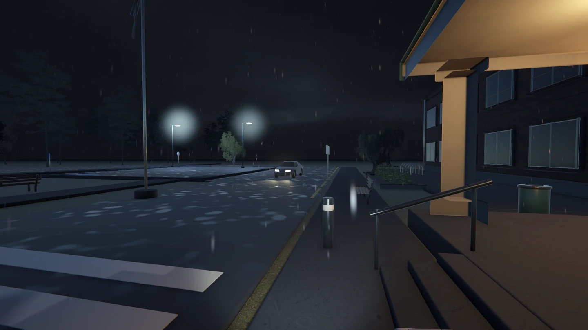
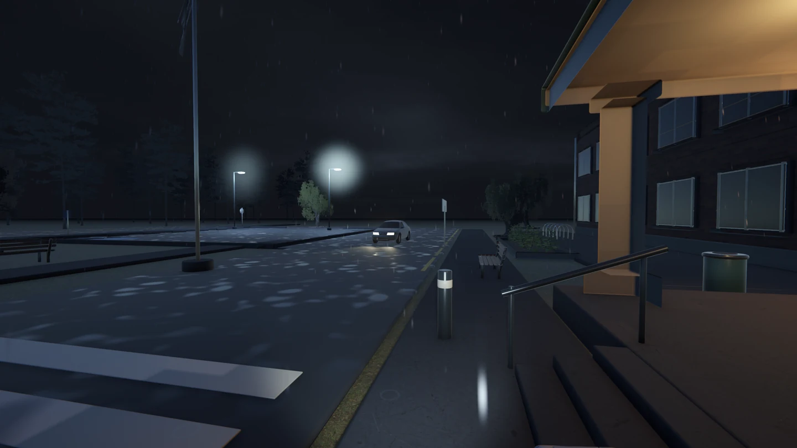

Entrega de
Quando os faróis aparecem na chuva
Quando Max abre a porta da escola, a luz quente da marquise ajuda a enxergar os degraus. Alguns passos adiante, um carro faz a curva no estacionamento. Nesse instante, queríamos que os faróis atraíssem o olhar.
O brilho no canto da imagem
Ao rever a cena, a gente acabou olhando para o teto. A borda da marquise reaparecia no canto superior direito justamente quando o carro se aproximava. Escolhemos o momento em que Max ergue a cabeça para ver a chuva. Enquanto ele olha para cima, as três luzes perdem força aos poucos. Quando o estacionamento volta ao quadro, elas já estão na metade da intensidade.


Da porta à curva
Comparamos as duas intensidades com a câmera e o carro parados na mesma posição. Depois percorremos a saída duas vezes no Mac em 4K. Na abertura da porta, os degraus continuaram bem visíveis. Na aproximação do carro, o brilho médio do canto da marquise caiu cerca de 16%. Os faróis mantiveram a própria intensidade.